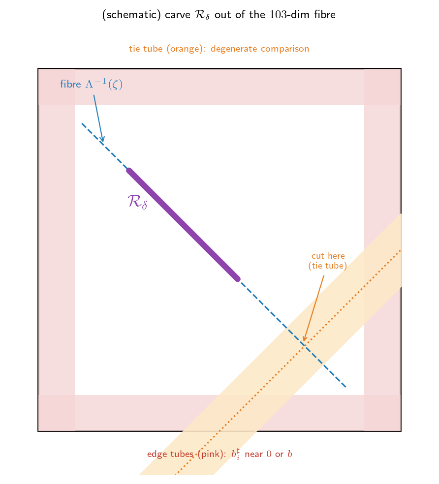

연구 ▷ HST ▷ [드라마] \(C_0\)를 함락하라 II — 다섯 전투의 전리품 (\(K_3\))
면책: 이 글은 §5.2 Doeblin minorization(Lemma 16) 증명에서 \(\eta>0\)을 만드는 다섯 인자 (i)~(v)를 원정 서사 2탄으로 각색한 내러티브다. 1탄(\(C_0\)를 함락하라)에서 전장·영토·보급로·목표 요새를 깔았고, 이번 편은 실제 전투다. 군대·시가전 같은 비유는 직관용, 통계가 아니다.
프롤로그. 1탄 끝에서 김프로가 못박았다 — “\(C_0\) 함락(\(\bar P^{\,nL}(s,\cdot)\geq\eta\,\nu\))은 다섯 전리품의 곱이다”:
\[\eta \;=\; \underbrace{\mu_{\min}^{nL}}_{(i)}\;\underbrace{q_d}_{(v)}\;\underbrace{(\varepsilon_{\rm D}/b)^{nLT_{\max}}}_{(ii)}\;\underbrace{c_*}_{(iii)}\;\underbrace{\lvert U\rvert_{\rm Leb}}_{(v)} \;>\;0.\]
이번 원정기는 그 다섯을 하나씩 딴다. 무대는 여전히 \(K_3\): \(n=3\), \(L=35\), \(nL=105\), \(b=1\), \(\mu_0=\mathrm{Unif}\).
박. 곱이라며 — 하나라도 \(0\)이면 전멸이라 했지. 다섯 다 양수란 걸 보이면 끝.
김. 그렇지. 그중 넷은 짧고, (iii) robust fibre가 진짜 시가전이야. 거기에 시간을 쓰자.
1막. (i) cyclic fall \(\mathcal{A}^{\sharp}\) — 전리품 \(\mu_{\min}^{nL}\)
한 라운드 = 한 번의 fall. fall이 일어날 때 walker는 \(\mu_0\)로 새로 떨어진다(\(X\sim\mu_0\)). 우리가 원하는 깔끔한 구조 — 각 사이클마다 \(v_1\to v_2\to v_3\) 순서로 정확히 한 번씩 fall — 이 나오려면, falls가 순환 순서로 떨어져야 한다.
- 한 fall이 원하는 노드에 떨어질 확률 \(\geq \mu_{\min} := \min_i \mu_0(v_i)\). \(K_3\) 균등이면 \(\mu_{\min} = \tfrac13\).
- \(nL = 105\)번의 fall이 전부 순서대로 떨어질 확률: \[\mathbb{P}(\mathcal{A}^{\sharp}) \;\geq\; \mu_{\min}^{nL} \;=\; \bigl(\tfrac13\bigr)^{105} \;>\;0.\]
지수적으로 작지만 양수다 — 그게 전부다 (minorization은 “양수 바닥”만 필요).
왜 순환이어야 하나 (반례). 각 노드가 사이클마다 정확히 한 번 fall을 받아야, 1탄의 per-block 차분벡터 \(\mathring{\mathbf{b}}^{\sharp}=(b^{\sharp}_2{-}b^{\sharp}_1, b^{\sharp}_3{-}b^{\sharp}_1)\) 구조가 깔끔하게 나오고 선형사상 \(\Lambda\)가 full rank(\(=d=2\))가 된다. 만약 falls가 한 노드에만 몰리면 — 예컨대 \(v_1\)에만 105번 — \(\Lambda\)의 rank가 떨어져 fibre가 양의 부피를 못 갖는다(3막에서 치명적). 그래서 cyclic 구조를 사건 \(\mathcal{A}^{\sharp}\)로 강제하고 그 확률값 \(\mu_{\min}^{nL}\)을 전리품으로 챙긴다.
2막. (ii) non-fall 억제 \(\mathcal{A}^{\flat}\) — 전리품 \((\varepsilon_{\rm D}/b)^{nLT_{\max}}\)
fall과 fall 사이엔 flow·block 스텝(non-fall)이 낀다. 그 스텝에서 방문 노드에도 눈 \(b^{\flat}\sim\mathrm{Unif}(0,b)\)이 쌓이고, 이게 높이차를 교란해 1탄의 잔차 \(r=R_{\mathbf{v}^{\flat}}(\mathbf{b}^{\flat})\)를 만든다. 이 교란을 작게 묶는 게 (ii)다.
- 각 non-fall 적립을 \(b^{\flat}\leq\varepsilon_{\rm D}\)로 제한한다 (사건 \(\mathcal{A}^{\flat}\)).
- 한 non-fall 스텝이 \([0,\varepsilon_{\rm D}]\)에 들 확률 \(= \varepsilon_{\rm D}/b\).
- non-fall 스텝은 최대 \(nLT_{\max} = 3\cdot35\cdot6 = 630\)개. 전부 작을 확률: \[\mathbb{P}(\mathcal{A}^{\flat}) \;\geq\; (\varepsilon_{\rm D}/b)^{nLT_{\max}} \;=\; \varepsilon_{\rm D}^{\,630} \;>\;0 \qquad (b=1).\]
여기서 \(\varepsilon_{\rm D} \leq \tfrac{b}{8nT_{\max}} = \tfrac{1}{144}\)로 잡으면, 1탄 잔차표대로 \(\|r\|_\infty \leq nLT_{\max}\,\varepsilon_{\rm D} \leq \tfrac{Lb}{8} = 4.375\)로 묶인다. 이 잔차 한계가 4막 transport에서 결정적으로 쓰인다.
김. (i)·(ii)는 “원하는 시나리오가 일어날 확률”을 양수로 깐 거야. 둘 다 지수적으로 작지만 \(>0\). 진짜 어려운 건 — 그 시나리오 위에서 표적을 실제로 맞히는 적립이 양의 부피로 존재하는가 — (iii)지.
3막. (iii) robust fibre — 103차원 시가전. 전리품 \(c_* = m_*/(b^{nL}J(\Lambda))\)
이제 무대를 fall 적립 공간으로 옮긴다. cyclic fall(\(\mathcal{A}^{\sharp}\)) 위에서 \(nL=105\)번의 fall 적립을 모으면 벡터
\[\mathbf{b}^{\sharp} \in [0,b]^{nL} = [0,1]^{105} \qquad (\text{105차원 큐브})\]
이고, 선형사상 \(\Lambda:\mathbb{R}^{105}\to\mathbb{R}^{2}\)가 이 적립을 변위로 보낸다: \(\Lambda\mathbf{b}^{\sharp}=\zeta\). (1탄의 \(\zeta=u-\mathring{\mathbf{h}}(s)-r\)가 표적.)
표적 \(\zeta\)를 맞히는 적립들 = fibre. \[\Lambda^{-1}(\zeta)\cap[0,1]^{105} \;=\; \{\,\mathbf{b}^{\sharp}\in[0,1]^{105} : \Lambda\mathbf{b}^{\sharp}=\zeta\,\}.\] \(105\)차원 큐브를 \(2\)개 선형방정식으로 자른 것이라, 이건 \(105-2 = 103\)차원 조각이다. “표적 하나당, 그걸 맞히는 적립이 103차원만큼 널려 있다.”
(코어) coarea 공식 — 큐브 밀도를 fibre 부피로 환전. 1탄에서 \(L\)겹 fall 밀도 \(f_L(\zeta)\)를 봤다. coarea 공식(Federer)이 이 밀도를 fibre의 103차원 Hausdorff 측도 \(\mathcal{H}^{103}\)로 바꿔준다:
\[f_L(\zeta) \;=\; b^{-nL}\,J(\Lambda)^{-1}\,\mathcal{H}^{103}\!\bigl([0,b]^{nL}\cap\Lambda^{-1}(\zeta)\bigr),\]
여기서 \(J(\Lambda)=\sqrt{\det(\Lambda\Lambda^{\top})}\)는 야코비안(적립→변위 변환의 부피 배율, \(\Lambda\)가 full rank라 \(>0\)). 1탄에서 \(K_U\subset\operatorname{int}(L\cdot\mathcal{O})\)이라 \(f_L\geq c_K>0\)였으니, 위 식을 뒤집으면
\[\mathcal{H}^{103}(\text{fibre}) \;=\; b^{nL}J(\Lambda)\,f_L(\zeta) \;\geq\; b^{nL}J(\Lambda)\,c_K \;=:\; m_0 \;>\;0.\]
즉 \(K_U\)의 모든 표적에서 적립 fibre가 103차원 양의 부피 \(m_0\) 이상을 갖는다. falls가 표적을 맞히는 길이 “넓게” 열려 있다는 뜻.
(시가전) 위험 튜브 도려내기. 그런데 그 103차원 부피 전부가 안전하진 않다. 두 종류의 위험 지대를 \(\delta\) 폭으로 도려내야 한다:
Note🔽 접어둔 군사 계산 — 두 튜브와 \(m_* = m_0/2\)
- 큐브 가장자리 튜브. 어떤 적립 \(b^{\sharp}_i\)이 \(0\) 또는 \(b\)에 \(\delta\) 이내인 점들 (눈이 거의 안 쌓였거나 꽉 찬 극단). 4막 transport가 적립을 살짝 밀면 이런 점은 큐브 \([0,b]^{nL}\) 밖으로 튕겨나가 무효가 된다. 이 튜브의 fibre 측도 \(\leq C_{\rm bdry}\,\delta\).
- tie 튜브. 높이 비교 \(\widetilde{u}_i\) vs \(\widetilde{u}_j\)가 등호에 \(\delta\) 이내인 점들 (1탄 ④의 등호 초평면 \(\kappa_U\) 근처). 여기선 비교가 퇴화해 분기 \(\mathbf{v}^{\flat}\)가 바뀌어 버린다. 측도 \(\leq C_{\rm tie}\,\delta\).
\(\delta\)를 충분히 작게 잡아 \((C_{\rm bdry}+C_{\rm tie})\delta \leq m_0/2\) 이고 \(\delta\leq\kappa_U\)이게 한다. 그러면 두 튜브를 뺀 robust fibre
\[\mathcal{R}_\delta(\zeta,s) \;:=\; (\text{fibre}) \setminus (\text{가장자리 튜브} \cup \text{tie 튜브})\]
가 남고, \(\mathcal{H}^{103}(\mathcal{R}_\delta) \geq m_0 - m_0/2 = m_0/2 =: m_*>0\). 부피를 변위 밀도로 환산한 게 \(c_* = m_*/(b^{nL}J(\Lambda))\).
위 도식은 103차원 fibre를 2차원 만화로 줄인 것 — 파란 점선이 fibre, 분홍이 큐브 가장자리 튜브, 주황이 tie 튜브, 보라 굵은 선이 도려내고 남은 안전한 알짜 \(\mathcal{R}_\delta\)(\(m_*\)만큼). “넓은 시가지에서 벽(\(b^{\sharp}=0,b\))·함정(tie)을 \(\delta\)폭으로 비우고 한가운데 안전지대를 확보”하는 그림이다.
왜 굳이 도려내나 (반례). 도려내기 전 fibre엔 가장자리(\(b^{\sharp}_i\approx0\)) 점이 섞여 있다. 4막 transport가 적립을 \(-QR\)만큼 밀 때, 그런 점은 \(b^{\sharp}_i<0\)이 돼 큐브 밖으로 나가 — 실제로 일어날 수 없는 적립이 된다. tie 점은 밀면 분기가 바뀌어 측도 계산이 무너진다. 그래서 밀어도 안 무너지는 알짜만 남겨야 (iv)가 작동한다.
4막. (iv) transport — 잔차 흡수, 측도 보존
1탄에서 봤듯 실제 한 회차엔 잔차 \(r=R_{\mathbf{v}^{\flat}}(\mathbf{b}^{\flat})\neq0\)이라, falls가 만들어야 할 총합이 \(\zeta\)가 아니라 \(\zeta - r\)로 옮겨진다. 이걸 적립의 강체 평행이동으로 흡수한다:
\[\mathbf{b}^{\sharp} \;\mapsto\; \widehat{\mathbf{b}}^{\sharp} := \mathbf{b}^{\sharp} - Q\,R_{\mathbf{v}^{\flat}}(\mathbf{b}^{\flat}) \qquad\Longrightarrow\qquad \Lambda\widehat{\mathbf{b}}^{\sharp} = \zeta - R_{\mathbf{v}^{\flat}}(\mathbf{b}^{\flat}).\]
핵심은 평행이동이 \(\mathcal{H}^{103}\)를 보존한다는 것 — 그러니 3막에서 확보한 robust fibre의 부피 \(m_*\)가 \(r\)이 뭐든 그대로 살아남는다. 그리고 3막에서 가장자리·tie를 \(\delta\) 도려낸 덕에, \(\mathcal{A}^{\flat}\)의 작은 잔차(\(\|QR\|_\infty\leq C_Q B_R\varepsilon_{\rm D}\leq\delta/4\))만큼 밀어도 \(\widehat{\mathbf{b}}^{\sharp}\)가 여전히 큐브 안 + 같은 분기 유지. (3막 도려내기가 여기서 보답받는다.)
결론: 가능한 모든 잔차 \(r\)에 대해 robust fibre가 \(m_*\)로 살아남으므로, \(\mathbf{b}^{\flat}\)(잔차) 적분에서 floor가 균일하게 빠져나온다 — 1탄에서 “한 점이 아니라 밀도, 모든 \(r\) 커버, 적분으로 \(r\) 소거”라 했던 그 메커니즘의 정체가 이 transport다.
5막. (v) 조립 — 다섯을 한 번에 적분
이제 곱한다. 모든 \(B\subseteq U\)에 대해, 위 네 조각을 합쳐:
\[\bar{P}^{\,nL}\bigl(s,\,B\times\{v_n\}\bigr) \;\geq\; \underbrace{\mu_{\min}^{nL}}_{(i)\ \text{cyclic fall}}\;\underbrace{(\varepsilon_{\rm D}/b)^{nLT_{\max}}}_{(ii)\ \text{non-fall 억제}}\;\underbrace{q_d}_{\text{분기 가중}}\;\underbrace{c_*}_{(iii)\ \text{robust fibre}}\;\lvert B\rvert_{\rm Leb}.\]
여기서 \(q_d>0\)은 이산 분기의 최소 가중 — walker tie-break(확률 \(\geq 1/\deg_{\max}\))과 라운드별 threshold draw(\(\Theta^{(r)}\), 확률 \(1/(n{+}1)\)) 등이 만드는 양수. \(\lvert B\rvert/\lvert U\rvert\) 꼴로 정리하면 기준측도 \(\nu=\mathrm{Unif}(U)\otimes\delta_{v_n}\)에 대해
\[\boxed{\;}\!\!\!\quad \eta \;=\; \mu_{\min}^{nL}\,q_d\,(\varepsilon_{\rm D}/b)^{nLT_{\max}}\,c_*\,\lvert U\rvert_{\rm Leb} \;>\;0.\]
다섯 전리품 — (i) \(\mu_{\min}^{nL}>0\), (ii) \((\varepsilon_{\rm D}/b)^{nLT_{\max}}>0\), (iii) \(c_*>0\), (iv) 측도 보존(양수성 유지), (v) \(q_d\lvert U\rvert_{\rm Leb}>0\) — 이 모두 양수라 곱 \(\eta>0\). 이것이 곧
\[\bar{P}^{\,nL}(s,\cdot) \;\geq\; \eta\,\nu \qquad (\forall\, s\in C_0)\]
— \(C_0\)가 small set, 2탄 함락 완료(Lemma 16 증명 끝).
결산 — 다섯 전리품
| 전투 | 전리품 | \(K_3\) 값/정체 | 무엇을 보장 |
|---|---|---|---|
| (i) cyclic fall \(\mathcal{A}^{\sharp}\) | \(\mu_{\min}^{nL}\) | \((\tfrac13)^{105}\) | \(\Lambda\) full rank (fibre가 양의 부피) |
| (ii) non-fall 억제 \(\mathcal{A}^{\flat}\) | \((\varepsilon_{\rm D}/b)^{nLT_{\max}}\) | \(\varepsilon_{\rm D}^{630}\), \(\|r\|\leq4.375\) | 잔차를 작게 묶음 |
| (iii) robust fibre | \(c_*=m_*/(b^{nL}J(\Lambda))\) | \(103\)차원 알짜 \(m_*=m_0/2\) | 표적 맞히는 적립이 양의 부피 |
| (iv) transport | (측도 보존) | \(\mathbf{b}^{\sharp}\!\mapsto\!\mathbf{b}^{\sharp}{-}QR\) | 어떤 잔차 \(r\)이든 흡수 |
| (v) 조립 | \(q_d\,\lvert U\rvert_{\rm Leb}\) | 이산 분기 가중 | 다섯을 한 번에 적분 |
\[\eta = \mu_{\min}^{nL}\,q_d\,(\varepsilon_{\rm D}/b)^{nLT_{\max}}\,c_*\,\lvert U\rvert_{\rm Leb} > 0.\]
박. 그래서 falls가 이겼네.
김. 이겼다. 다섯 전투를 모두 양수로 끝냈으니 곱도 양수 — “\(C_0\) 어디서 출발하든 \(nL\)라운드 뒤 공통 바닥 \(\eta\,\nu\)”가 깔린다. 1탄에서 깐 무대 위에서, 이번 편의 다섯 전투가 그 무대를 실제로 점령한 거지.
박. 다음 능선은?
김. 여기까진 H2(small set) 한 봉우리다. 전체 에르고딕 정리는 H1(\(\psi\)-irreducibility·aperiodicity)·H3(Foster drift)까지 세 봉우리 — 그 원정기는 또 다음에.
(드라마체 각색 2탄. 엄밀한 (i)~(v)·coarea·tube 도려내기·transport는 정본 hst_AAA.tex Lemma 16 및 1탄 petite small set \(K_3\) 참조.)